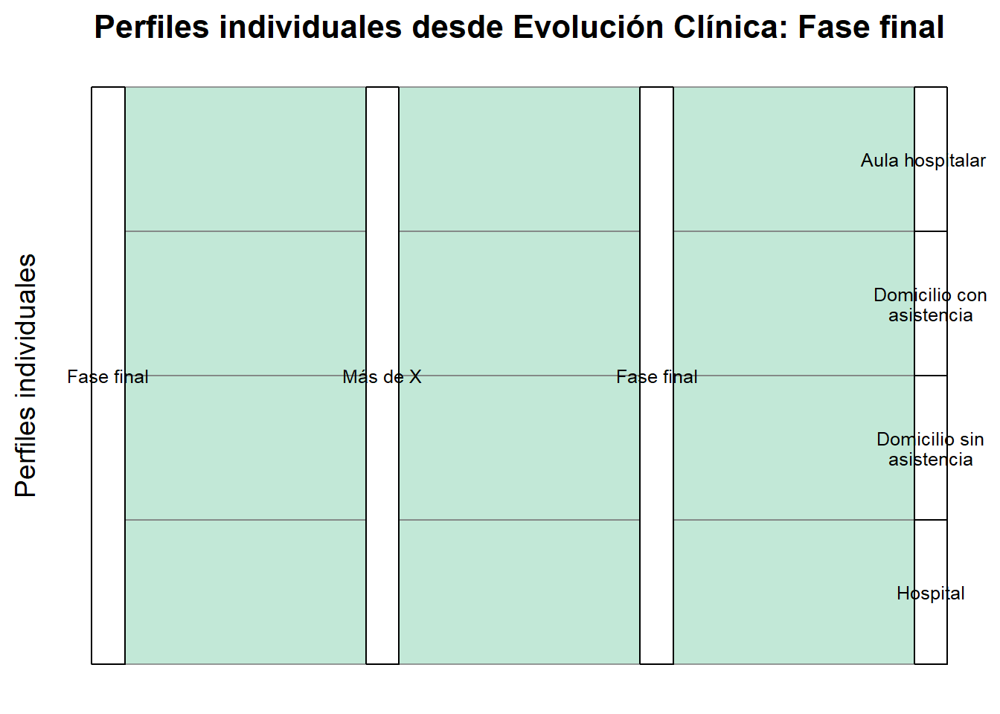

1 Construcción de Perfiles: Variables, Justificación y Visualización
1.1 Definición de Criterios, de propuestas del Acta a propuestas Exhaustivas y sin solapamiento
En la siguiente tabla se propone una modificación de las dimensiones aportadas en los criterios así como un comienzo de operativización de los mismos para colaborar en su futura utilidad de cara a la priorización de criterios de selección.
1.1.1 Relación entre Criterios Previos y Variables Propuestas
Criterios Previos
Categorías Criterios Previos
Criterios Propuestos
Categorías Criterios Propuestos
¿Qué nos dicen estas categorías que sea relevante?
Duración
Existente, Prevista
Histórico de Ausencias
Ninguna, Menos de X (días/semanas), Más de X (días/semanas)
¿Se han roto los vínculos?
Evolución Educativa
Ausencia, Reincorporación medio plazo, Fase final
Pronóstico educativo
Reincorporación, Ausencia prolongada, Fase final
¿Qué se prevé en base a su momento escolar?
Desdoblamos entonces duración en las dos variables de Histórico de Ausencias y Pronóstico Educativo, aportando datos más precisos para su posterior análisis. Mediante este cambio dividimos los criterios para evitar solapamientos y hacerlos excluyente, colaborando en la definición de perfiles. Proseguimos con relaciones lógicas entre perfiles que imposibilitan algunas construcciones.
1.2 Criterios a Analizar para la construcción de los Perfiles:
Criterios
Categorías Criterios
¿Qué nos dicen estas categorías que sea relevante?
Histórico de Ausencias
Ninguna, Menos de X (días/semanas), Más de X (días/semanas) en los últimos X Meses?
¿Se han roto los vínculos?
Pronóstico educativo
Reincorporación, Ausencia prolongada, Fase final
¿Qué se prevé en base a su momento escolar?
Situación topológica
Aula hospitalaria ,Hospital , Domicilio (con asistencia / sin asistencia), Sin determinar
¿Dónde está físicamente? ¿Con quién hay que coordinar desde el aula? (clave para la metodología AVATARES)
Evolución Clínica
Debutante como operativizar? (problemática verano), Diagnosticado previamente como operativizar? (problemática verano), Recidiva, Fase Final
¿En qué momento clínico se encuentra actualmente, pasó ya por esto, está comenzando?
Nivel educativo / Edad
Continua o intervalos; 1º a 6º primaria y 1º a 4º de ESO
A mayor edad: mayor complejidad curricular, menor contacto con docentes, más interferencias evolutivas, etc. A menor edad menor necesidad de contacto con pares….
Compromiso del centro
Bajo, Medio, Alto
Define el grado de implicación institucional en la adaptación e inclusión del alumno.
Compromiso familiar
Bajo, Medio, Alto
La ayuda esperada en la implementación por parte de la familia
Nivel Educativo/Edad, Compromiso del centro y Compromiso Familiar: Responden a variables completamente independientes, que multiplican los casos pero no aportan casos de imposibilidad en un primer análisis. Se tratarán más adelante para establecer valores preferentes para la inclusión en el piloto, pero serán omitidos en el siguiente apartado del informe de Incompatibilidades Lógicas.
2 Incompatibilidades Lógicas
2.1 Incompatibilidades Lógicas: Histórico de Ausencias
2.1.1 Pronóstico Educativo
En primer lugar no observamos incompatibilidades lógicas entre Histórico de Ausencias y Pronóstico educativo, ya que estas han de estar mediadas por la Situación clínica actual u otra variable.
2.1.2 Situación topológica
En cambio podemos observar como no es posible no tener Ausencias en el aula ordinaria y estar atendiendo al Aula Hospitalaria, estar hospitalizado o estar en el domicilio con o sin atención domiciliaria.
Histórico de Ausencias
Situación Topológica
Motivo de Incompatibilidad
Ninguna
Aula Hospitalaria
La asistencia a un aula hospitalaria implica ausencia del centro ordinario.
Ninguna
Hospitalización
Hospitalización conlleva necesariamente interrupción de la asistencia regular.
Ninguna
Domicilio con atención educativa
La atención domiciliaria sustituye la escolarización presencial: supone ausencias acumuladas.
Ninguna
Domicilio sin atención educativa
No asistir al centro ni recibir atención implica necesariamente una trayectoria de ausencias.
Más de X Días
Sin determinar
Cuando ya se ha establecido la enfermedad y sucedió un lapso de tiempo necesario para que se produzca la pérdida de vínculos ha de ser necesario que este esté situado en alguna de las otras categorías
Por lo tanto extraemos que en el caso de Histórico de Ausencias sea igual a Ninguna es necesario que su Situación Topológica sea Sin determinar, que encaja perfectamente con el posible perfil de un Debutante si observamos la las categorías de Evolución Clínica. Al igual que con Más de X Días es necesario que no sea Sin determinar.
2.1.3 Evolución clínica
Existen también relaciones de incompatibilidad entre el estado clínico actual y el histórico de Ausencias
Histórico de Ausencias
Evolución clínica
Motivo de Incompatibilidad
Ninguna
Diagnosticado Previamente
Existiendo la distinción con Recidiva no debería ser posible que un discente diagnosticado por primera vez no acumulara ninguna ausencia
Ninguna
Fase Final
Asumimos unas ausencias mínimas necesarias en un caso de esta gravedad
Menos de X días
Fase Final
Asumimos unas ausencias mínimas necesarias en un caso de esta gravedad
Más de X días
Debutante
El período de tiempo en el que se acepte que alguien es Debutante no debería aceptar la desvinculación del grupo siguiendo la pregunta que guía la formulación de Histórico de Ausencias
Dada la situación actual en el sistema educativo se precisa esta vinculación
2.2.2 Situación topológica
No observamos relación de intolerancia entre estas variables.
2.2.3 Evolución clínica
Encontramos una relación de necesidad y coherencia entre el pronóstico final clínico con el pronóstico educativo.
2.3 Situación topológica
2.3.1 Histórico de ausencias
Ya ha sido tratado
2.3.2 Pronóstico educativo
Ya ha sido tratado
2.3.3 Evolución clínica
No encontramos relaciones incompatibles entre las variables.
2.4 Incompatibilidades lógicas: Evolución clínica
2.4.1 Histórico de Ausencias
Evolución clínica
Histórico de Ausencias
Motivo de Incompatibilidad
Fase Final
Más de X días
Dada la situación actual en el sistema educativo se precisa esta vinculación
2.5 Resumen Incompatibilidades Lógicas
Encontramos tres tipos de relaciones: de incompatibilidad y de necesidad simétricas y asimétricas:
Tipo de relación
Categoría-variable_1
Categoría-variable_2
De necesidad Asimétrica
Histórico de Ausencias= Ninguna
Situación Topológica= Sin determinar
Incompatibilidad
Histórico de Ausencias= Ninguna
Evolución clínica = Diagnosticado Previamente
Incompatibilidad
Histórico de Ausencias= Ninguna
Evolución clínica = Fase final
Incomptaibilidad
Histórico de Ausencias = Menos de X días
Evolución clínica = Fase Final
Incompatibilidad
Histórico de Ausencias = Más de X días
Evolución clínica = Debutante
Incompatibilidad
Histórico de Ausencias = Más de X días
Situación Topológica = Sin determinar
De necesidad Simétrica
Pronóstico educativo = Fase Final
Evolución clínica = Fase final
De necesidad Asimétrica
Evolución clínica = Fase Final
Histórico de Ausencias = Más de X días
Observamos como las categorías discriminatorias, que establecen necesidades de relación son: Histórico de Ausencias, Situación Topológica, Evolución clínica y Pronóstico educativo.
3 Posibles Perfiles
Definidas las incompatibilidades lógicas podemos tratar de elaborar en primer lugar tablas que nos permitan observar el universo de posibles perfiles válidos e inválidos, para ello nos serviremos de R mediante los siguientes chunks de código:
Code
# Cargar librerías (opcional si ya las cargas en el .qmd)library(tidyverse)# Categorías por variablecat_historico_ausencias <-c("Ninguna", "Menos de X", "Más de X") cat_pronostico_educativo <-c("Reincorporación", "Ausencia prolongada", "Fase final")cat_situacion_topologica <-c("Aula hospitalaria", "Hospital", "Domicilio con asistencia", "Domicilio sin asistencia", "Sin determinar")cat_evolucion_clinica <-c("Debutante", "Diagnosticado previamente", "Recidiva", "Fase final")cat_nivel_educativo <-c("1º Primaria", "2º Primaria", "3º Primaria", "4º Primaria", "5º Primaria", "6º Primaria","1º ESO", "2º ESO", "3º ESO", "4º ESO")cat_compromiso_familia <-c("Bajo", "Medio", "Alto")cat_compromiso_centro <-c("Bajo", "Medio", "Alto")# Variables clave para gráficos (ordenadas)vars <-c("Historico_Ausencias", "Pronostico_Educativo", "Situacion_Topologica", "Evolucion_Clinica")# Etiquetas legiblesetiquetas <-c(Historico_Ausencias ="Histórico de Ausencias",Pronostico_Educativo ="Pronóstico Educativo",Situacion_Topologica ="Situación Topológica",Evolucion_Clinica ="Evolución Clínica")# Lógica de validación para perfileses_valido <-function(ha, pe, st, ec) {if (ha =="Ninguna"&& ec %in%c("Diagnosticado previamente", "Fase final")) return(FALSE)if (ha =="Menos de X"&& ec =="Fase final") return(FALSE)if (ha =="Más de X"&& ec =="Debutante") return(FALSE)if (ha =="Más de X"&& st =="Sin determinar") return(FALSE)if (ha =="Ninguna"&& st !="Sin determinar") return(FALSE)if (ec =="Fase final"&&!(ha %in%c("Más de X"))) return(FALSE)if ((pe =="Fase final"&& ec !="Fase final") || (ec =="Fase final"&& pe !="Fase final")) return(FALSE)return(TRUE)}# Crear todas las combinaciones posiblescombinaciones <-expand.grid(Historico_Ausencias = cat_historico_ausencias,Pronostico_Educativo = cat_pronostico_educativo,Situacion_Topologica = cat_situacion_topologica,Evolucion_Clinica = cat_evolucion_clinica,stringsAsFactors =FALSE)# Filtrar combinaciones válidascombinaciones$valido <-mapply( es_valido, combinaciones$Historico_Ausencias, combinaciones$Pronostico_Educativo, combinaciones$Situacion_Topologica, combinaciones$Evolucion_Clinica)combinaciones_validas <- combinaciones[combinaciones$valido ==TRUE, ]combinaciones_invalidas <- combinaciones[combinaciones$valido ==FALSE, ]
Tenemos en primer lugar ahora definidas dentro de los límites de lo que describen nuestros operadores y sus relaciones una serie de perfiles que son posibles y que no:
Mostrar/Ocultar tabla de combinaciones inválidas con conflictos destacados
Total combinaciones inválidas: 126
Mostrar/Ocultar tabla de combinaciones válidas
Podemos observar que categorías aportan más poder discriminatorio, para así luego facilitar la visualización mediante difertentes tipos de gráficos.
7 Posibles perfiles partiendo de Evolución clínica:
7.1 Evolución clínica: Debutante
Observamos la existencia de 12 posibles perfiles definidos a partir de un Debutante:
10 han faltado menos de X días, de los cuales 5 tienen prevista una ausencia prolongada del aula ordinaria, y están tanto en las situaciones topológicas determinadas como en situación Indeterminada. De los otros 5 se prevé su reincorporación y se reparten por igual en las situaciones topológicas.
Vemos por otro lado la existencia de 2 posibles perfiles de Debutantes que no tuvieron Ninguna Ausencia debutante de verano sería posible, que pueden tener tanto Ausencia prolongada como Reincorporación como previsión educativa, pero están en un espacio sin determinar aún.
7.2 Evolución clínica: Diagnosticado Previamente
7.3 Evolución clínica: Recidiva
7.4 Evolución clínica: Fase Final

8 Posibilidades
Tras la definición de criterios sería posible asignar puntuaciones a las posibles variables de cada posible participante y establecer incluso la necesidad de una homogeneidad o heterogeneidad mínima entre los candidatos, facilitando así la labor de investigación.